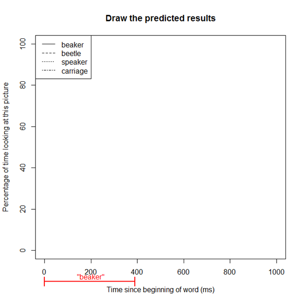

In a visual world experiment, participants look at some picture on the screen while they listen to a word or sentence. While they are
listening, the eye-tracker can record what part of the picture they are looking at.
The picture below is an example from a famous/classic visual world eye-tracking paper.
While a person is looking at this picture, they will hear the sentence "The boy will move the cake."
How do you think people's eyes will move around the picture as they listen to this
sentence? At each word or phrase, where do you think they will look?
It turns out that when people hear a word, they tend to look at that thing. So, for example, people look at the boy when they hear
the boy..., and they tend to look at the cake when they hear ...the cake.
Here is how we can look at the results from a visual world experiment. We can divide the duration of the whole sentence into brief
chunks (e.g., 50 milliseconds each). For each brief chunk, we can calculate what percentage of the time people look at a certain
part of the picture. (Keep in mind that in a real experiment there will be many sentences, not just one. So for example, if a person
hears 100 sentences with 100 pictures, and during a particular 50-ms time window they are looking at the cake in 90 of those 100
sentences, we would say they look at the cake 90% of the time.) Then we can make a graph like this:
The black squares show how much people look at the cake, as the sentence is unfolding. The white squares show how much people look at
the other objects. We can see that, at the beginning of the sentence, people don't look much at the cake or at the other objects
(probably they're mostly looking at the boy). As the sentence goes on, they look at the cake more and more. By the end of the
sentence, they are almost always looking at the cake, and they are looking at the cake much more than they look at the other
objects.
Weirdly, it seems like in this experiment, people looked more at the cake than they looked at the other objects, even before they
heard the word "cake". Can you guess why? (It might help to look at the picture again.)
You can notice from the picture that the boy seems to be staring at the cake; that probably made people want to look at the cake too,
even before they hear the sentence. Plus, maybe cake is just more interesting to look at than other things. So this is definitely
not a perfect experiment; but it's the first experiment to try this visual world paradigm, so it helped us learn about all these
issues.
But I haven't told you about the cool part of this experiment yet. Remember that people saw a picture (shown again below), and they
heard "The boy will move the cake".
The authors also tried this another way, too. They showed the same kind of picture, but let people hear a sentence like "The boy
will eat the cake".
Do you think the results might be different when people see "The boy will eat the cake"? If so, what do you think will happen
differently, compared to the previous results we saw?
Here's what was found in that experiment.
The graph below is arranged the same as what you saw before; it's the same graph, with a few new lines added.
Recall that when people hear "the boy will move the cake", they eventually look at the cake. In fact they are already looking
at the cake very early (because of the problem with the picture). But they don't start really looking at the cake a lot until around
when they hear the word "cake"; that's the time that they start to look at the cake much more than they look at other things.
On the other hand, the black circles in this graph show how much people look at the cake when they hear "the boy will eat the
cake", and the white circles show how much they look at other objects when they hear this sentence.
You should notice that they start looking at the cake a lot (i.e., the black circles get much higher than the white circles) much
earlier. Before they even heard the word "cake", they are already looking at cake much more. Why does this happen?
It happens because "cake" is the only thing in the picture that is edible! Therefore, as soon as they hear "The boy will
eat...", they can already predict that the word is going to be cake. This experiment was one of the first ever to give evidence
that people predict upcoming words before we hear them.
Another kind of visual world experiment
That is a classical visual world study showing how people predict upcoming words. But visual world doesn't only have to be used with
full sentences. It can even show us how we figure out single words as we are hearing them.
Keep in mind that it takes some time to hear a word. You don't hear a word all at once; it takes time for the word to unfold. (You can
try this out yourself and see. If you have completed the "Phonetic analysis" module, then you've already downloaded Praat on your
computer; or even if you haven't, you can use any simple speech recording app on your phone. Record yourself saying some short word,
then open it in Praat and see how long it takes. In Chinese, even a one-syllable word often takes around 300 milliseconds or so.)
That means that when you are hearing a word, there is a moment when you have only heard part of it and you might still be guessing
what you are hearing.
Consider, for example, the word beaker (實驗室烧瓶).
When you are hearing someone say this word, first you just hear [b]. Then you hear [bi]... maybe you think you're hearing the word
bee! Then you hear [bik]... maybe you think you're hearing the word beak!
Obviously, a lot of stuff might happen in your mind before you finish hearing the complete word. Can we use visual world eye-tracking
to track what's happening in someone's mind over time as they are hearing a word unfold?
This is one of the most popular uses of the visual world paradigm. A famous early experiment that did is one by Allopenna and
colleagues (1998); below we'll discuss that experiment.
In that experiment, people would hear a word (such as beaker) while looking at a picture like this:
The real version of the picture wouldn't have words written on it; I just put those here for our reference. From the top, going
clockwise, the picture has four key objects: a speaker (揚聲器), a beetle (甲蟲), a carriage (BB車),
and a beaker (實驗室烧瓶—actually if you are a chemistry expert you might say the thing shown in
this picture is a "flask" rather than a "beaker", but in colloquial English, people who aren't chemistry experts call all of these
things "beakers").
For this question, I want you to predict what the visual world eye-tracking results will look like when people hear beaker while
looking at this picture. Using the below graph as a template, draw four lines: how much people will look at the beetle over time,
how much they will look at the beaker over time, how much they will look at the speaker over time, and how much they will look at
the carriage over time. For each one, you should think about what will happen as the word unfolds. In other words, when people hear
just [b] how much will they look at the beaker, how much will they look at the carriage, etc.; when people hear [bi] how much will
they look at each of these; etc.
You can draw your results on the blank template below.
